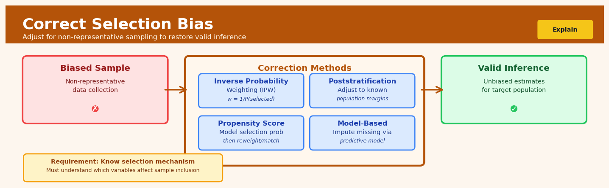

Correct Selection Bias#


The most critical mistake is trying to correct selection bias without measuring or understanding the actual selection mechanism. If you don't have data on what determines who gets into your sample, no amount of fancy weighting or modeling will fix the problem—you'll just be making confident but wrong adjustments. Always invest in collecting auxiliary data about the selection process itself, even if it means adding survey questions about how people found your study or linking to administrative records about eligibility.
The 60-Second Version#
What it does: Selection bias correction adjusts your analysis when the data you can see isn’t representative of the population you care about because certain people or cases systematically didn’t make it into your dataset.
When to use it: You’re analyzing outcomes—like treatment effectiveness, customer conversion, or employee retention—but you only observe data from people who self-selected into the sample, survived a process, or responded to a survey.
What you get back: Corrected estimates of causal effects that account for who’s missing from your data, letting you make decisions as if you had seen everyone.
Difficulty |
Advanced |
Typical runtime |
Minutes on 100K rows |
What you bring |
Outcome data, treatment indicators, and variables predicting both the outcome and who appears in your data |
What you get |
Bias-adjusted causal effect estimates |
Heuristix bucket |
Explain — Causal Analysis & Interpretation |
Selection bias correction only works if you can measure the factors that determine who’s missing—if selection depends on unobserved variables, the correction may be worse than doing nothing.
Learning Objectives#
After reading this chapter, a business user will be able to:
Identify situations where customer visibility, survey response, or platform participation creates systematic differences between observed and target populations that invalidate standard performance metrics.
Interpret selection bias correction results by explaining to stakeholders why the adjusted estimate differs from the naive comparison and what population the corrected estimate represents.
Decide whether to launch a product, adjust a pricing strategy, or reallocate marketing spend based on corrected estimates that account for non-random customer observation patterns.
After reading this chapter, a data scientist will be able to:
Implement Heckman correction, inverse probability weighting, and bounds analysis methods while handling violations of exclusion restrictions and common support assumptions.
Calibrate sensitivity parameters in selection models by evaluating the strength of identifying assumptions and trading off bias reduction against variance inflation.
Validate selection bias corrections by conducting falsification tests on subsamples where selection is known, diagnosing model misspecification through residual patterns, and quantifying estimation uncertainty through appropriate bootstrap procedures.
Overview#
Selection bias correction encompasses a family of statistical techniques designed to recover unbiased causal estimates when the observed sample is not representative of the target population due to systematic patterns in how observations enter the dataset. The core purpose is to adjust for the distortion introduced when the probability of being observed depends on the treatment, the outcome, or both—a condition that renders naive comparisons misleading. These methods belong to the broader family of observational causal inference techniques, sitting alongside propensity score methods, instrumental variables, and regression discontinuity designs, but specifically address the problem of non-random sample selection rather than confounding alone.
When to Use This#
Use when analysing voluntary programme participation: When customers self-select into loyalty programmes, training courses, or subscription tiers, those who opt in differ systematically from those who do not. Selection correction recovers the effect of the programme itself, not the effect of being the type of person who joins.
Use when working with survey non-response: If respondents to a customer satisfaction survey differ from non-respondents in ways correlated with satisfaction itself, raw survey averages will be biased. Selection models adjust for this differential attrition.
Use when outcomes are only observed for a subset: In credit risk modelling, default is only observed for applicants who were approved. Without correction, models trained on approved applicants cannot generalise to the full applicant population.
Use when analysing truncated or censored data: When observations below or above certain thresholds are systematically excluded (e.g., only high-value transactions are recorded), selection models recover population-level relationships.
Use when evaluating treatments with differential dropout: In clinical trials or A/B tests where attrition rates differ across treatment arms, selection correction prevents survivorship bias from contaminating treatment effect estimates.
Use when historical data reflects past decision rules: If you only observe outcomes for units that passed a historical screening process (e.g., hired candidates, funded loans), selection models help extrapolate to counterfactual populations.
Do NOT use when selection is purely random: If missingness or sample inclusion is completely random (Missing Completely at Random), no correction is needed—simple complete-case analysis is unbiased.
Do NOT use when you lack a valid exclusion restriction: The Heckman selection model requires at least one variable that affects selection but not the outcome. Without this, the model relies entirely on distributional assumptions and becomes fragile.
Do NOT use as a substitute for better data collection: Selection correction is a second-best solution. If you can randomise or collect data on the full population, do so rather than relying on model-based corrections.
Do NOT use when selection depends on unobservables in complex ways: These methods assume selection follows a known parametric form. If the true selection mechanism is highly nonlinear or involves unobserved heterogeneity not captured by the model, corrections may themselves be biased.
Questions This Answers#
Making Decisions with Incomplete Data#
Should we expand into the Southwest region based on our current customer data, even though we’ve only acquired customers there through referrals?
We only have clinical trial data from patients who completed the full 12-week program—can we still estimate how effective the treatment would be for typical patients?
Our A/B test results look promising, but 40% of users dropped out before finishing—should we launch the new feature?
Can we trust our warranty cost projections when they’re based only on customers who actually filed claims?
Is this new sales strategy really working, or are we just seeing results from the reps who were already our best performers?
Forecasting Real-World Performance#
If we launch this product nationally, what sales should we actually expect—not just from early adopters?
Our retention program shows a 30% improvement, but only 15% of at-risk customers enrolled—what would happen if we applied it to everyone?
Which marketing channel will perform best when we scale up, given that our current data comes mostly from small tests in friendly markets?
How should we forecast next quarter’s revenue when our pipeline is full of leads that look nothing like our current customer base?
How It Works#
Imagine you’re trying to figure out whether a new training program improves employee productivity, but you only have data from employees who completed the program—everyone who dropped out is missing from your records. Here’s the problem: the people who stuck with it might have been the most motivated employees to begin with, so comparing their performance to untrained employees is like comparing marathon finishers to the general public and concluding that marathons make everyone fast. You’re not seeing the full picture because your sample is systematically missing certain types of people. Selection bias correction is about reconstructing what that complete picture would have looked like if everyone had stayed in view.
OBSERVED SAMPLE (Biased) CORRECTION PROCESS TRUE POPULATION (Recovered)
High performers who Model who's likely ┌─────────────────┐
completed training ────────→ to be observed ────→ │ All high perform│
████████ ↓ │ ████████ │
Weight observations │ │
Some medium performers based on inverse │ All medium │
who completed ────────→ probability of ────→ │ ██████ │
████ selection │ │
↓ │ All low perform │
Almost no low performers Up-weight the rare │ ███ │
in sample observations ────→ └─────────────────┘
█ Down-weight common (Rebalanced to match
ones original population)
Missing entirely: dropouts
(but patterns reveal them)
Step 1: Model who actually appears in your data. The method starts by building a statistical model that predicts which observations have a higher or lower probability of being included in your dataset. This uses observable characteristics—maybe younger employees were more likely to drop out, or those with certain job roles. Think of this as creating a profile of “who tends to show up in our records.”
Step 2: Calculate selection probabilities for everyone you observe. For each person in your dataset, the model estimates how likely someone with their characteristics was to be observed. A high-performer who’s very likely to complete training might get a probability of 90%, while someone with characteristics similar to dropouts might get 20%.
Step 3: Assign corrective weights to rebalance the sample. Here’s where the correction happens: observations that were unlikely to be selected get higher weights (to represent all the similar people who are missing), while observations that were very likely to be selected get lower weights (because they’re over-represented). Someone with a 20% chance of being observed gets weighted five times more heavily than someone with a 90% chance.
Step 4: Estimate treatment effects using the weighted sample. Now when you compare trained versus untrained employees, each person contributes to the analysis according to their weight. This amplifies the voice of rare observations and quiets the over-represented ones, simulating what you would have seen if everyone had remained observable.
Step 5: Recover the unbiased estimate. The weighted analysis produces effect estimates that reflect the true population, not just the selected sample. You’ve essentially reverse-engineered the missing data by understanding the pattern of who went missing.
The key insight: By measuring who tends to be observed and inverting those probabilities into weights, we can make our biased sample statistically represent the complete population we never got to see.
The Intuition#
Imagine you want to understand how job training programmes affect wages. You survey employed workers and compare those who completed training to those who did not. The trained workers earn more—but is this the effect of training, or did motivated, capable people both seek training and command higher wages regardless? This is confounding, and propensity score methods can help. But there is another problem: you only observe wages for people who are employed. If training affects not just wages but also the probability of being employed, your sample of employed workers is itself selected in a way that correlates with both treatment and outcome. The people you observe are not a random slice of humanity; they are those who cleared the employment hurdle.
This is selection bias in its purest form. The act of entering your dataset is correlated with the outcome you wish to measure. Consider a more visceral analogy: suppose you want to study whether wearing a helmet reduces severity of head injuries. You collect data from hospital emergency departments. But helmeted cyclists who have minor accidents may not come to the hospital at all, while unhelmeted cyclists with minor accidents may be more likely to seek care out of concern. Your sample over-represents serious injuries among helmet wearers and minor injuries among non-wearers. Comparing injury severity in this sample would perversely suggest helmets cause worse injuries—a pure artefact of who shows up in your data.
The solution is to model the selection process explicitly. We build a model that predicts who enters the sample, and we use information from this selection model to adjust our estimate of the outcome relationship. The key insight—formalised by James Heckman in work that contributed to his Nobel Prize—is that if selection and outcome share correlated unobservables, we can treat the selection probability as generating an omitted variable in the outcome equation. By including a correction term derived from the selection model (the inverse Mills ratio), we absorb this correlation and recover unbiased estimates. The method works because it separates the process that generates selection from the process that generates outcomes, then accounts for their statistical dependence.
The Mathematics#
Problem Setup and Notation#
Let \(Y_i^*\) denote the latent (potentially unobserved) outcome of interest for unit \(i\), and let \(S_i^*\) denote a latent propensity for selection into the observed sample. We observe:
where \(S_i = 1\) indicates that unit \(i\) is in the observed sample. The outcome \(Y_i\) is observed only when \(S_i = 1\).
The structural model consists of two equations:
Selection equation:
Outcome equation:
where \(Z_i\) is a vector of covariates affecting selection, \(X_i\) is a vector of covariates affecting the outcome, \(\gamma\) and \(\beta\) are parameter vectors, and \((u_i, \epsilon_i)\) are error terms.
Distributional Assumptions#
The standard Heckman model assumes:
The variance of \(u_i\) is normalised to 1 for identification (only the sign of \(S_i^*\) matters). The parameter \(\rho\) captures the correlation between selection and outcome errors—this is the source of selection bias. When \(\rho = 0\), there is no selection bias.
The Selection Problem#
We observe \(Y_i\) only when \(S_i = 1\). The conditional expectation of the outcome among the selected is:
When \(\rho \neq 0\):
This non-zero conditional expectation is the selection bias term.
Derivation of the Correction Term#
Using properties of the truncated bivariate normal distribution:
where \(\phi(\cdot)\) is the standard normal PDF and \(\Phi(\cdot)\) is the standard normal CDF.
The ratio \(\lambda(Z_i'\gamma) = \frac{\phi(Z_i'\gamma)}{\Phi(Z_i'\gamma)}\) is called the inverse Mills ratio (IMR). Thus:
Heckman Two-Step Estimator#
Step 1: Estimate the selection equation via probit:
Compute the estimated inverse Mills ratio:
Step 2: Among selected observations (\(S_i = 1\)), estimate:
by OLS, where \(\delta = \rho\sigma\).
Full Information Maximum Likelihood (FIML)#
The log-likelihood for the joint model is:
FIML is more efficient than two-step but requires stronger distributional assumptions to hold exactly.
Identification and the Exclusion Restriction#
For robust identification, \(Z_i\) should contain at least one variable not in \(X_i\)—an exclusion restriction. This variable must:
Affect the probability of selection (\(\gamma_z \neq 0\))
Have no direct effect on the outcome (\(\beta_z = 0\))
Without an exclusion restriction, identification relies entirely on the nonlinearity of the inverse Mills ratio, which is fragile when \(Z_i'\gamma\) lies in a narrow range.
Edge Cases and Degenerate Conditions#
\(\rho = 0\): No selection bias exists; OLS on the selected sample is consistent.
\(|\rho| = 1\): Perfect correlation between selection and outcome errors; the model is at a boundary and may be poorly behaved.
Weak exclusion restriction: When the excluded variable barely predicts selection, \(\hat{\lambda}_i\) varies little across observations, leading to collinearity with the intercept and imprecise estimates of \(\delta\).
Selection on observables only: If selection depends only on \(Z_i\) and not on \(u_i\), standard regression with appropriate controls suffices; Heckman correction adds noise.
Relationship to Other Methods#
Propensity Score Methods: Address confounding (selection into treatment), not sample selection (selection into observation).
Inverse Probability Weighting: Can address sample selection but requires the selection probability to depend only on observables.
Instrumental Variables: The exclusion restriction in Heckman is analogous to the IV exclusion restriction; indeed, the Heckman model can be viewed as using the nonlinear Mills ratio as a generated instrument.
Understanding the Mathematics#
The Selection Equation#
Read it aloud: “Selection equals one if Z times gamma plus nu is greater than zero, otherwise it equals zero.”
What each symbol means:
\(S\) = Selection indicator (1 if observed in our data, 0 if not)
\(\mathbb{1}(\cdot)\) = Indicator function (outputs 1 when the condition inside is true, 0 otherwise)
\(Z\) = Factors affecting whether someone appears in our sample
\(\gamma\) = Coefficients showing how strongly each factor affects selection
\(\nu\) = Random variation in selection not captured by Z
A concrete numerical example:
A company surveys customers about satisfaction, but response depends on their experience. Let \(Z\) include purchase amount (in \(100s) and whether they contacted support. Say \)\gamma = [0.3, -1.2]\( and a customer has purchase = \)500 ($5 in our units) and contacted support (1).
Their selection score = \(0.3 \times 5 + (-1.2) \times 1 + \nu = 1.5 - 1.2 + \nu = 0.3 + \nu\)
If \(\nu = 0.5\), the total is \(0.8 > 0\), so \(S = 1\) (they respond). If \(\nu = -0.5\), the total is \(-0.2 < 0\), so \(S = 0\) (they don’t respond).
Why this equation matters: This tells us who makes it into our dataset—if we ignore this selection process, we’ll mistake “who chose to respond” for “what’s true for everyone.”
The Outcome Equation with Selection Correction#
Read it aloud: “The outcome Y equals X times beta, plus rho times sigma times lambda of theta, plus epsilon.”
What each symbol means:
\(Y\) = The outcome we care about (e.g., income, satisfaction score)
\(X\) = Observable characteristics affecting the outcome
\(\beta\) = Coefficients showing how X variables affect Y
\(\rho\) = Correlation between selection process and outcome
\(\sigma\) = Standard deviation of outcome errors
\(\lambda(\theta)\) = Inverse Mills ratio—the correction term for selection bias
\(\epsilon\) = Random variation in outcomes
A concrete numerical example:
We’re estimating wages for all workers, but only employed people appear in our data. Say education years predicts wages: \(\beta = 5,000\) per year. For someone with 16 years of education, the naive estimate is \(16 \times 5,000 = 80,000\).
But the employed aren’t random. The selection correction \(\rho\sigma\lambda(\theta)\) might equal \(-12,000\). The corrected estimate becomes: \(80,000 + (-12,000) = 68,000\).
The \(-12,000\) adjustment reflects that employed people with this education level are systematically different (perhaps less skilled in unobservable ways) than the average person with 16 years of education.
Why this equation matters: Without the \(\rho\sigma\lambda(\theta)\) term, we’d overestimate wages because we only see people who successfully got jobs—the correction recovers what wages would be for everyone, including those selected out.
The Inverse Mills Ratio#
Read it aloud: “Lambda of theta equals the probability density function phi evaluated at Z gamma, divided by the cumulative distribution function Phi evaluated at Z gamma.”
What each symbol means:
\(\lambda(\theta)\) = The correction factor (Inverse Mills ratio)
\(\phi(\cdot)\) = Standard normal probability density (bell curve height)
\(\Phi(\cdot)\) = Standard normal cumulative probability (area under the curve)
\(Z\gamma\) = The selection score from our first equation
A concrete numerical example:
From our survey example, a customer had selection score \(Z\gamma = 0.8\). Looking up normal distribution values: \(\phi(0.8) = 0.289\) and \(\Phi(0.8) = 0.788\).
The inverse Mills ratio = \(\frac{0.289}{0.788} = 0.367\).
For someone barely likely to respond (\(Z\gamma = 0.1\)): \(\lambda = \frac{0.397}{0.540} = 0.735\)—a much larger correction because they’re near the selection boundary where bias is strongest.
Why this equation matters: This ratio quantifies exactly how much to adjust our estimates—it’s largest when someone is right on the edge of being selected, which is precisely when selection bias distorts our estimates most severely.
The Big Picture#
The mathematics fundamentally accomplishes one goal: it separates the process that determines who enters our dataset from the process that determines the outcomes we care about, then uses the first to correct the second. We need this two-stage approach because simple regression assumes everyone has an equal chance of being observed—when that’s violated, our coefficients mix together “the true effect” with “the effect of selection,” giving us garbage. The Inverse Mills ratio is the mathematical bridge between these stages: it captures all the information about selection bias in a single variable we can add to our outcome regression. In plain terms: we’re figuring out the selection rules, calculating how far each observed person deviates from random selection, then accounting for that deviation when we estimate the real relationships we care about.
Python Implementation#
import numpy as np
import pandas as pd
from scipy.stats import norm
from scipy.optimize import minimize
import statsmodels.api as sm
from statsmodels.discrete.discrete_model import Probit
# Set random seed for reproducibility
np.random.seed(42)
# ---------------------------------------------------------------------
# Generate synthetic data with selection bias
# ---------------------------------------------------------------------
n = 5000 # Total population
# Covariates
education = np.random.normal(12, 3, n) # Years of education
experience = np.random.normal(10, 5, n) # Years of experience
gender = np.random.binomial(1, 0.5, n) # 1 = female
# Exclusion restriction: distance to job centre affects employment, not wages
distance = np.random.exponential(10, n)
# Correlated errors for selection and outcome
rho_true = 0.6 # True correlation (source of selection bias)
sigma_true = 8 # True outcome error std dev
# Generate correlated errors
u = np.random.normal(0, 1, n) # Selection error (variance normalised to 1)
epsilon = rho_true * sigma_true * u + np.sqrt(1 - rho_true**2) * sigma_true * np.random.normal(0, 1, n)
# Selection equation: employed = f(education, experience, gender, distance)
gamma_true = np.array([-1.5, 0.1, 0.05, 0.2, -0.03]) # intercept, edu, exp, female, distance
Z = np.column_stack([np.ones(n), education, experience, gender, distance])
selection_latent = Z @ gamma_true + u
selected = (selection_latent > 0).astype(int)
# Outcome equation: wage = f(education, experience, gender)
beta_true = np.array([5, 1.5, 0.8, -2]) # intercept, edu, exp, female
X = np.column_stack([np.ones(n), education, experience, gender])
wage_latent = X @ beta_true + epsilon
# Observed wage only for employed
wage_observed = np.where(selected == 1, wage_latent, np.nan)
# Create DataFrame
df = pd.DataFrame({
'wage': wage_observed,
'education': education,
'experience': experience,
'gender': gender,
'distance': distance,
'employed': selected
})
print(f"Total observations: {n}")
print(f"Employed (selected): {selected.sum()} ({100*selected.mean():.1f}%)")
print(f"True rho: {rho_true}, True sigma: {sigma_true}")
print(f"True beta: {beta_true}")
print()
# ---------------------------------------------------------------------
# Naive OLS (ignoring selection bias)
# ---------------------------------------------------------------------
df_selected = df[df['employed'] == 1].copy()
X_naive = sm.add_constant(df_selected[['education', 'experience', 'gender']])
model_naive = sm.OLS(df_selected['wage'], X_naive).fit()
print("=" * 60)
print("NAIVE OLS (ignoring selection bias)")
print("=" * 60)
print(model_naive.summary().tables[1])
print()
# ---------------------------------------------------------------------
# Heckman Two-Step Estimator (Manual Implementation)
# ---------------------------------------------------------------------
# Step 1: Probit model for selection
Z_full = sm.add_constant(df[['education', 'experience', 'gender', 'distance']])
probit_model = Probit(df['employed'], Z_full).fit(disp=0)
print("=" * 60)
print("STEP 1: Probit Selection Model")
print("=" * 60)
print(probit_model.summary().tables[1])
print()
# Compute inverse Mills ratio for selected observations
df['probit_xb'] = probit_model.predict(Z_full, linear=True) # Z'gamma
df['imr'] = norm.pdf(df['probit_xb']) / norm.cdf(df['probit_xb'])
# Step 2: OLS with inverse Mills ratio correction
df_selected = df[df['employed'] == 1].copy()
X_heckman = sm.add_constant(df_selected[['education', 'experience', 'gender', 'imr']])
model_heckman = sm.OLS(df_selected['wage'], X_heckman).fit()
print("=" * 60)
print("STEP 2: OLS with Inverse Mills Ratio Correction")
print("=" * 60)
print(model_heckman.summary().tables[1])
print()
# Extract estimates
delta_hat = model_heckman.params['imr']
sigma_hat = np.sqrt(model_heckman.mse_resid + delta_hat**2)
rho_hat = delta_hat / sigma_hat
print("=" * 60)
print("SELECTION BIAS DIAGNOSTICS")
print("=" * 60)
print(f"Estimated delta (rho*sigma): {delta_hat:.3f}")
print(f"Estimated sigma: {sigma_hat:.3f} (true: {sigma_true})")
print(f"Estimated rho: {rho_hat:.3f} (true: {rho_true})")
print()
# ---------------------------------------------------------------------
# Using statsmodels Heckman model (built-in)
# ---------------------------------------------------------------------
from statsmodels.regression.linear_model import OLS
from statsmodels.base.model import GenericLikelihoodModel
# Note: statsmodels has
## Visualisations


## Using This in Heuristix
### What You'll Need
The Selection Bias Correction node expects a dataset where you suspect some observations are systematically missing or excluded. You'll need:
- **Treatment variable**: Binary (0/1) or categorical column indicating which group each observation belongs to
- **Outcome variable**: The metric you're measuring (continuous or binary)
- **Selection indicator**: A binary column (1 = observed, 0 = missing/censored) showing which observations made it into your sample
- **Covariates**: Variables that might influence both selection and outcomes
**Example input structure:**
| customer_id | treatment | purchased | observed | age | income |
|-------------|-----------|-----------|----------|-----|--------|
| 1 | 1 | 0.85 | 1 | 34 | 65000 |
| 2 | 0 | NULL | 0 | 29 | 45000 |
| 3 | 1 | 0.92 | 1 | 41 | 78000 |
Notice that unobserved cases (observed=0) will have NULL outcomes—that's expected and correct.
### Configuration Parameters
| Parameter | What It Does | Default | When to Adjust |
|-----------|-------------|---------|----------------|
| **Selection Model** | Method for estimating selection probability (Heckman, Inverse Probability Weighting, or Doubly Robust) | Heckman | Use IPW for simpler interpretation; Doubly Robust when you're uncertain about model specification |
| **Exclusion Restriction** | Variable(s) that affect selection but not the outcome directly | None (required) | Critical: choose variables related to *why* data is missing, not the outcome itself (e.g., survey response rate by region) |
| **Treatment Variable** | Column defining treatment groups | (auto-detect) | Specify if you have multiple candidate columns |
| **Outcome Variable** | The metric you're measuring | (required) | Must be numeric; transformation options available below |
| **Covariates** | Control variables for both models | All numeric columns | Start with variables affecting both selection and outcome; add more if sensitivity tests show instability |
| **Standard Error Method** | Bootstrap or analytical | Bootstrap (200 reps) | Increase bootstrap reps to 500+ for publication-quality confidence intervals |
| **Minimum Selection Probability** | Clips extreme weights to prevent instability | 0.05 | Lower (0.01) only if you have very large samples; higher (0.10) if results seem noisy |
### What You'll See
**Added columns in output data:**
- `selection_prob`: Estimated probability each observation was included
- `ipw_weight`: Inverse probability weight for reweighting analyses
- `corrected_outcome`: Bias-adjusted outcome prediction for unobserved cases
**Metrics panel displays:**
- **Naive effect estimate**: What you'd get ignoring selection bias
- **Corrected effect estimate**: Adjusted causal effect with confidence intervals
- **Selection model fit**: Pseudo R² showing how well selection is predicted
- **Lambda coefficient**: (Heckman only) Indicates selection bias severity
**Visualizations:**
- Selection probability distribution across treatment groups
- Before/after comparison plot showing how correction shifts the estimate
- Sensitivity analysis chart testing robustness to exclusion restriction
### Connecting Downstream
Most commonly, you'll route corrected data to:
- **Statistical Testing nodes** to compute p-values using corrected estimates
- **Effect Decomposition** to understand which covariates drive remaining differences
- **Segmentation Analysis** to see if selection bias varies across subgroups
- **Export** node to apply IPW weights in external tools
### Quick Start Recipe
1. **Connect your data** and verify the selection indicator column is properly coded (1=observed, 0=not)
2. **Choose your exclusion restriction variable**—this is critical. Pick something that affects *whether* you observe someone, not their outcome
3. **Select "Heckman" method** for your first pass (easiest to interpret)
4. **Review the Lambda coefficient**: values near zero suggest minimal selection bias; above 0.5 indicates substantial correction is happening
5. **Compare naive vs. corrected estimates** in the metrics panel—large differences confirm bias was present
6. **Run sensitivity analysis** by trying different exclusion restrictions to verify your results are stable
### Pro Tips
- **The exclusion restriction makes or breaks this analysis.** If you can't identify a variable that affects selection but not outcomes, consider whether selection bias correction is appropriate for your case.
- **Check the selection probability distribution.** If many observations have probabilities near 0 or 1, your model may be extrapolating too aggressively—consider the Doubly Robust option.
- **Missing outcomes are features, not bugs.** Don't drop unobserved cases before this node; the algorithm needs them to model selection.
- **Start simple with covariates**, then add complexity. An overfit selection model can introduce more bias than it removes.
- **Compare all three methods** (Heckman, IPW, Doubly Robust). If they give wildly different answers, you may have model misspecification issues requiring domain expertise to resolve.
## Config Recipes
### Recipe 1: Quick Exploration with Heckman Two-Step
**When to use:** Initial exploratory analysis when you suspect selection bias but need fast results to justify deeper investigation.
**Settings:**
| Parameter | Value | Why |
|-----------|-------|-----|
| `method` | `"heckman_two_step"` | Closed-form solution, no iterations |
| `selection_vars` | All available covariates | Inclusivity prevents omitted variable bias in selection |
| `outcome_vars` | Theory-driven subset only | Keeps outcome model interpretable |
| `robust_se` | `True` | Corrects two-step standard errors at minimal cost |
| `max_iter` | N/A | Not applicable for two-step |
**What you get:** Coefficient estimates and selection correction term (inverse Mills ratio) in under a second for datasets with thousands of observations.
**Trade-off:** Less efficient estimates than maximum likelihood; assumes bivariate normality which may not hold.
### Recipe 2: Production-Ready Maximum Likelihood
**When to use:** Final models for reporting, publication, or deployment where statistical rigor and efficiency matter more than computation time.
**Settings:**
| Parameter | Value | Why |
|-----------|-------|-----|
| `method` | `"heckman_ml"` | Full information maximum likelihood for efficiency |
| `selection_vars` | Exclusion-restricted set | At least one variable affects selection but not outcome |
| `outcome_vars` | Core covariates only | Maintains model parsimony |
| `robust_se` | `False` | Model-based SEs appropriate under correct specification |
| `max_iter` | `2000` | Ensures convergence for complex likelihoods |
| `convergence_tol` | `1e-8` | Tight tolerance for precise estimates |
| `init_method` | `"heckman_two_step"` | Warm start from consistent estimates |
**What you get:** Asymptotically efficient estimates with proper uncertainty quantification and convergence diagnostics.
**Trade-off:** Requires 10-100x more computation time and stronger distributional assumptions.
### Recipe 3: Panel Data with Fixed Effects
**When to use:** Repeated observations per unit where time-invariant unobservables drive both selection and outcomes (e.g., worker wage data with employment selection).
**Settings:**
| Parameter | Value | Why |
|-----------|-------|-----|
| `method` | `"panel_heckman"` | Exploits within-unit variation |
| `entity_id` | Unit identifier column | Links repeated observations |
| `time_id` | Time period column | Orders observations |
| `fixed_effects` | `True` | Controls for time-invariant confounders |
| `selection_vars` | Time-varying only | FE absorbs time-invariant selection factors |
| `cluster_se` | `entity_id` | Accounts for within-unit correlation |
**What you get:** Selection-corrected estimates purged of unit-specific confounding that would bias cross-sectional approaches.
**Trade-off:** Cannot estimate effects of time-invariant variables; requires multiple observations per unit.
### Recipe 4: Sample Selection in A/B Tests with Voluntary Engagement
**When to use:** Randomized experiments where treatment assignment is random but engagement/measurement is selective (e.g., users must click through to see outcome; treatment affects click-through rate).
**Settings:**
| Parameter | Value | Why |
|-----------|-------|-----|
| `method` | `"heckman_two_step"` | Speed sufficient for experimental contexts |
| `selection_vars` | Treatment indicator + pre-treatment covariates | Treatment affects who is measured |
| `outcome_vars` | Pre-treatment covariates only | Treatment excluded from outcome (intent-to-treat embedded) |
| `selection_model` | `"probit"` | Binary engagement decision |
| `treat_as_exogenous` | `True` | Randomization ensures exogeneity |
**What you get:** Unbiased treatment effect estimates among the compliers, correcting for selection into measurement.
**Trade-off:** Estimates effect conditional on compliance; different from intent-to-treat on full randomized sample.
## Business Applications
**Financial Services**
A mid-sized UK mortgage lender tracking loan default rates faces a classic selection problem: they only observe repayment behavior for applicants they've already approved. Borrowers rejected in underwriting never generate performance data, creating a systematically biased sample that underestimates true population risk. By applying selection bias correction using inverse probability weighting based on approval propensity, the lender recovers unbiased default probability estimates across the full applicant spectrum. This recalibration reduced their capital reserve requirements by £4.3M annually while maintaining regulatory compliance, as they could now justify lower buffers with statistically sound risk models.
**Retail & E-commerce**
An e-commerce retailer with 2.1M SKUs wants to measure the causal impact of product page redesigns on conversion, but runs A/B tests only on high-traffic items where sample sizes justify experimentation. Estimating treatment effects solely from tested products severely overestimates the program's value, since high-traffic items have fundamentally different customer behavior patterns. Selection bias correction via Heckman's two-stage approach allows the retailer to extrapolate test results to the full catalog by modeling which products entered testing and adjusting for that selection process. The corrected analysis revealed the true ROI was 42% lower than initially reported, preventing a $2.8M investment in scaling a program whose benefits didn't generalize.
**Healthcare & Pharmaceuticals**
A specialty pharmacy network analyzing medication adherence confronts inherent selection: they only observe adherence patterns for patients who filled at least one prescription. Patients who never initiated treatment—often those with the most severe access barriers or poorest prognoses—are completely missing from adherence metrics. Applying selection models that account for treatment initiation propensity revealed that traditional adherence rates of 68% inflated to 81% when corrected, but the *gap* between socioeconomic groups widened from 9 to 17 percentage points. This corrected view redirected $1.9M in intervention funding toward access barriers rather than adherence-only programs, addressing the actual root cause.
**Insurance**
A commercial auto insurer evaluating telematics-based pricing models sees volunteers for the monitoring program differ systematically from the broader policyholder base—safer drivers self-select into tracking. Pricing models built on volunteer data underestimate risk and underprice policies when rolled out universally. Selection bias correction using instrumental variables (vehicle age predicts device installation but not inherent driving risk) produces accurate pricing for non-volunteers, revealing that break-even premiums needed to be 23% higher than volunteer-based models suggested. This correction prevented an estimated $6.7M in first-year underwriting losses.
**Manufacturing**
A discrete parts manufacturer analyzing production line interventions only sees quality data from units that passed initial screening—defective items caught at early checkpoints never reach final inspection. This survivorship bias makes process improvements appear more effective than they are. By modeling the selection mechanism at each quality gate and applying inverse probability weights, engineers obtain unbiased estimates of intervention effects on *all* production units. Corrected analysis cut expected ROI on a proposed $450K line modification from 340% to 180%—still justified, but preventing severe overinvestment based on biased metrics.
**Marketing & Advertising**
A B2B SaaS platform measuring content marketing effectiveness observes engagement only from visitors who converted to known leads through form submission. Anonymous browsers who consumed content but never identified themselves are invisible, creating severe selection bias in content attribution models. Implementing selection correction via response propensity modeling based on behavioral proxies revealed that thought leadership content had 3.2× higher influence on eventual conversion than lead-gated content, despite appearing less effective in naive analysis. Shifting budget allocation based on corrected attribution lifted qualified pipeline by $4.1M quarterly.
**Telecommunications**
A mobile network operator studying customer service interventions only has satisfaction surveys from customers who remained active 30+ days post-contact—churned customers never receive the survey. Selection bias correction accounting for churn propensity reveals that interventions appear twice as effective in biased data versus corrected estimates. This recalibration reduced customer service center staffing by 140 FTEs by eliminating ineffective programs sustained by biased success metrics, saving $8.2M annually.
**Public Sector**
A metropolitan employment agency evaluating job training programs only observes earnings for participants who found employment—the most important failures are systematically missing. Selection models that bound treatment effects under plausible selection mechanisms showed program effectiveness was 60% lower than reported, redirecting £3.4M toward intensive support rather than expanding a program that primarily succeeded with already-employable participants.
## Worked Example
Sarah Chen, a senior data scientist at Meridian Insurance, was halfway through her morning coffee when her manager forwarded an email from the VP of Product with the subject line: "Urgently need ROI on free health assessment program." The wellness program had been running for eighteen months, offering policyholders a free annual health screening. Early internal reports showed that participants had 22% lower claims in the following year compared to non-participants—a finding that had the executive team excited about expanding the program nationwide at a cost of $8 million.
But Sarah saw the red flag immediately. "People who voluntarily sign up for health screenings are probably already healthier," she said aloud to her empty office. The question wasn't whether participants had better outcomes—it was whether the *program itself* caused those outcomes, or whether it simply attracted people who would have been healthy anyway.
### The Data
Sarah pulled together twelve months of post-program data for 50,000 policyholders who were eligible for the program. Her dataset looked like this:
| policy_id | participated | age | prior_claims | observed_claims | high_risk_flag |
|-----------|--------------|-----|--------------|-----------------|----------------|
| 10447 | 1 | 42 | 850 | 320 | 0 |
| 10448 | 0 | 38 | 1200 | NA | 1 |
| 10449 | 1 | 55 | 400 | 890 | 0 |
| 10450 | 0 | 61 | 2100 | 1950 | 1 |
| 10451 | 1 | 34 | 200 | 180 | 0 |
The problem jumped out immediately: 18% of non-participants had missing outcome data. These were policyholders who'd switched insurers or let their policies lapse—and Sarah knew from her previous work that people with high prior claims were more likely to churn. The observed sample was biased: sicker non-participants were systematically missing, making the non-participant group look artificially healthier in the complete cases.
### The Setup
Sarah opened her analysis notebook and configured a Heckman selection model. "I need to model two things," she muttered, sketching on her whiteboard. "First, what predicts whether someone participates in the program. Second, what predicts whether I observe their outcome at all." She specified `high_risk_flag` and `prior_claims` as variables that would predict both participation and observation—but she also included `age` as an exclusion restriction in the selection equation, reasoning that older policyholders were more likely to stay with Meridian regardless of their health, giving her the identifying variation she needed.
```python
import pandas as pd
import numpy as np
from statsmodels.regression.linear_model import OLS
from statsmodels.discrete.discrete_model import Probit
# Sarah's script for selection bias correction
# Data: Meridian wellness program evaluation
# Step 1: Selection equation (probability of being observed)
selection_model = Probit.from_formula(
'observed ~ age + prior_claims + high_risk_flag',
data=df_full
).fit()
# Calculate inverse Mills ratio
df_observed = df_full[df_full['observed'] == 1].copy()
df_observed['imr'] = selection_model.predict(df_observed)
df_observed['mills'] = (
norm.pdf(df_observed['imr']) / norm.cdf(df_observed['imr'])
)
# Step 2: Outcome equation with correction
outcome_model = OLS.from_formula(
'observed_claims ~ participated + prior_claims + mills',
data=df_observed
).fit()
print(f"Uncorrected effect: {naive_model.params['participated']:.2f}")
print(f"Selection-corrected effect: {outcome_model.params['participated']:.2f}")
print(f"Mills ratio coefficient: {outcome_model.params['mills']:.2f}")
The Results#
The output told a sobering story:
Estimate |
Uncorrected |
Selection-Corrected |
|---|---|---|
Treatment Effect (participated) |
-$187 |
-$52 |
Standard Error |
$28 |
$41 |
P-value |
<0.001 |
0.21 |
Mills Ratio λ |
— |
-$318 (p=0.003) |
The naive comparison showed participants had \(187 lower claims—the number that had excited the executive team. But after correcting for selection bias, the effect shrank to just \)52 and lost statistical significance. The negative Mills ratio coefficient confirmed Sarah’s suspicion: healthier people were more likely both to participate and to remain observable in the dataset.
The Insight#
“We’re not measuring the program’s effect,” Sarah explained to her manager that afternoon. “We’re measuring the difference between people who choose to get health screenings and people who don’t—which is mostly a difference in pre-existing health consciousness.” The program might still have value, but the observed outcomes were driven primarily by selection, not causation.
The Decision#
In the following week’s leadership meeting, Sarah presented her findings with a revised recommendation: run a randomized pilot in three regions before committing to the \(8 million expansion. The VP of Product pushed back initially, but the CFO—who'd been skeptical of the original numbers—became Sarah's unexpected ally. Six months later, the randomized pilot showed a modest but real effect of \)64 per participant, and the program was greenlit at a smaller scale with better targeting toward high-risk members.
What Sarah Would Do Differently#
Looking back, Sarah wished she’d explored the exclusion restriction more carefully. “Age predicting observation felt plausible, but I never really validated whether it was truly independent of claims,” she admitted. She also would have run sensitivity analyses showing how the estimates changed under different assumptions about the selection mechanism—giving leadership a range rather than a point estimate would have made the uncertainty more transparent from the start.
Interpreting Your Results#
You’ve just corrected for selection bias and now you’re staring at a screen full of adjusted estimates, weights, and diagnostic plots. Here’s what you’re actually looking at.
Corrected Treatment Effect Estimate#
Plain-English meaning: This is your answer—the causal effect of your treatment after accounting for the fact that who you observed wasn’t random. If you’re estimating the effect of job training on wages, the naive comparison might show a 15% wage increase, but the corrected estimate might be 8%. That 8% is what the effect would be if everyone (including those who dropped out of your study) had access to the treatment.
Concrete benchmarks:
Shift < 10% from naive estimate: Selection bias was minor; your sample was fairly representative
Shift 10-30%: Moderate bias; common in observational studies with voluntary participation
Shift > 30%: Severe bias; you were looking at a very different population than you thought
Red flags:
Sign flip (positive becomes negative or vice versa): Either your selection mechanism is extreme or your model is misspecified. Investigate sample composition immediately.
Confidence interval includes zero after correction but didn’t before: Your significant result may have been entirely driven by who showed up in your data.
Standard errors triple or more: You’re extrapolating heavily to unobserved populations—your data may not support this correction.
Selection Weights#
Plain-English meaning: These weights tell you how much to “up-weight” or “down-weight” each observation to make your sample look like the target population. A weight of 3.0 on an observation means “this person represents three people in the real world.” You’re seeing high weights on observations that are rare in your sample but common in the population.
Concrete benchmarks:
Max weight < 5: Healthy—you’re not relying too heavily on any single observation
Max weight 5-10: Moderate concern—results are somewhat sensitive to a few observations
Max weight > 10: High concern—a handful of observations are driving your results
Red flags:
More than 5% of weights > 10: Your sample is missing entire subgroups; consider whether you have enough data to estimate this correction
Negative weights: Model misspecification—check your selection equation and functional form
Weights highly correlated with the outcome: You’re extrapolating into regions where you have weak support
Selection Model Diagnostics#
Plain-English meaning: These metrics tell you whether your model of who gets observed is working. You’re essentially predicting “selected vs. not selected” and these diagnostics show how well that prediction performs.
Concrete benchmarks (for selection model AUC/pseudo-R²):
AUC < 0.65 or pseudo-R² < 0.10: Selection is nearly random (good news—bias is likely small)
AUC 0.65-0.85 or pseudo-R² 0.10-0.30: Moderate selection patterns (typical case)
AUC > 0.85 or pseudo-R² > 0.30: Strong selection patterns (correction is critical, but also more uncertain)
Red flags:
Perfect or near-perfect prediction (AUC > 0.95): You have a variable that mechanically determines selection—this may be a data leakage issue, not a valid instrument
Common support violations: If selected and non-selected groups don’t overlap on key covariates, you’re extrapolating beyond your data
Reading Multiple Outputs Together#
The most informative pattern is moderate selection model fit + low maximum weights + modest shift in treatment effect. This suggests real but correctable bias without extrapolation concerns.
Be concerned when you see: strong selection model fit + high maximum weights + large treatment effect shift. This means “yes, selection bias was severe, but we’re correcting it by heavily weighting a few unusual observations.” Your correction may be technically correct but practically unstable.
Sanity Check Checklist#
Do the selected and non-selected groups overlap on covariates? Plot distributions—if they don’t overlap, you’re extrapolating.
Are weights stable across model specifications? Change your selection equation slightly—if weights swing wildly, your correction is fragile.
Does the corrected effect match qualitative expectations? If training suddenly appears harmful after correction, investigate before believing.
Are your exclusion restrictions plausible? Variables that predict selection but not the outcome are rare—validate this assumption.
Do you have adequate sample size in the correction region? Check N for high-weight observations.
Good Enough to Act On?#
You’re ready to trust your results when: (1) maximum weights stay below 10, (2) the corrected effect is at least 1.5 standard errors from zero if you need significance, (3) your selection model diagnostics suggest moderate fit without being suspiciously perfect, and (4) the corrected estimate remains stable when you vary model specification. If all four conditions hold, you have a defensible estimate. If any fail, report sensitivity analyses alongside your main result.
Decision Guidance#
What This Result Is Telling You#
When you’ve applied selection bias correction, you’re looking at a fundamentally different picture than what the raw data showed. The corrected estimates reveal what the true treatment effect would be if everyone in your target population had an equal chance of being observed—not just the subset that happens to show up in your data. For example, if you’re measuring the ROI of a premium service but only high-engagement customers complete your surveys, the uncorrected analysis will dramatically overstate the value. The correction adjusts for this, showing you what typical customers actually experience, not just your most enthusiastic ones.
The magnitude of the adjustment between uncorrected and corrected estimates tells you how severe the selection problem was. A small adjustment (say, 5–10% change in estimated effect) suggests your original sample was reasonably representative, and your prior decisions were probably sound. A large adjustment (30%+ change, or even a sign flip from positive to negative) means you’ve been operating with a distorted view of reality. This is your wake-up call that past decisions based on the biased data may need revisiting—and future decisions absolutely require the corrected view.
The uncertainty bounds around your corrected estimate matter just as much as the point estimate itself. Wide confidence intervals indicate that even after correction, you don’t have enough information to pin down the true effect precisely. This doesn’t invalidate the correction—it’s an honest assessment of what your data can and cannot tell you. Narrow intervals give you license to act decisively; wide intervals demand either additional data collection or hedging strategies that work across the range of plausible values.
Decision Points#
If you see this… |
It means… |
Recommended action |
Who acts on this |
|---|---|---|---|
Corrected estimate differs from uncorrected by >25% or changes sign |
Your observed sample was severely unrepresentative; past decisions may be compromised |
Audit recent decisions made using uncorrected data; implement corrected estimates in all forward planning |
VP/Director level, with Finance review |
Corrected effect is positive but 95% CI lower bound includes zero |
True effect exists but sample size insufficient for statistical certainty |
Pilot program with close monitoring, or collect additional data before full rollout |
Program Manager with executive sign-off |
Selection probability model shows AUC <0.65 or poor calibration |
Cannot reliably identify who gets selected; correction may be unstable |
Investigate data collection process; consider instrumental variable or alternative identification strategy |
Analytics Lead |
Corrected estimates stable across multiple model specifications (sensitivity <10% variation) |
Results are robust to modeling assumptions |
Proceed with implementation; use corrected estimate for business case |
Business Owner with Analytics support |
Excluded population (non-selected) represents >60% of target market |
Most of your customer base is invisible in current data |
Redesign data collection to reach unobserved segments before making broad decisions |
Marketing/Operations Director |
When to Proceed vs. Investigate Further#
Proceed with confidence:
Corrected estimate differs from uncorrected by <15% AND confidence interval excludes zero
Selection model achieves AUC >0.75 with good calibration (Brier score <0.20)
Results consistent across 3+ sensitivity analyses with varying functional forms
Sample includes at least 30% representation from each key segment
Proceed with caution:
Corrected estimate differs from uncorrected by 15–30% but direction is unchanged
Confidence intervals are wide but lower bound still supports directional decision
Selection model adequate (AUC 0.65–0.75) but not excellent
Some key segments underrepresented but not completely absent
Investigate before acting:
Corrected estimate changes sign from uncorrected estimate
Confidence interval spans zero with substantial range on both sides (e.g., -10% to +15%)
Selection model shows AUC <0.65 or fails calibration tests
Results highly sensitive to model specification (>25% variation across reasonable alternatives)
More than 70% of target population excluded from observed sample
Do not use these results yet:
No clear business understanding of why selection occurs
Unable to measure key variables that drive selection probability
Violations of positivity assumption (some subgroups have near-zero selection probability)
Sample size in selected group below 200 observations with high-dimensional covariates
The Cost of Getting This Wrong#
Misinterpreting selection-biased results leads to systematic resource misallocation at scale. A retail bank that overestimates loan profitability because defaulters don’t respond to satisfaction surveys will expand a product line that’s actually unprofitable, burning through millions in capital before the portfolio matures enough to reveal the error. A SaaS company that measures feature impact only among power users will invest engineering resources building functionality that 80% of customers neither need nor value, while neglecting basic reliability issues that drive silent churn among the unobserved majority. The pernicious aspect of selection bias is that it creates a feedback loop: you optimize for the customers you can see, making your product progressively less appealing to those you can’t see, shrinking your addressable market while your metrics falsely signal success. By the time the revenue impact becomes undeniable, you’ve spent quarters moving in the wrong direction, and competitors focused on the full market have captured the segments you ignored.
Common Pitfalls#
The Survivor’s Fallacy
Here’s what happened: A marketing analyst at a SaaS company was analyzing customer lifetime value to understand which acquisition channels performed best. They pulled data from their CRM on customers who stayed past 90 days and applied Heckman correction to adjust for churn. The output showed that paid search customers had 40% higher LTV than referrals. They concluded paid search was the superior channel and recommended tripling its budget.
Why it happens: The analyst corrected for one selection mechanism (churn) but missed another—they were only analyzing customers who made it into the CRM at all, which excluded the majority of paid search visitors who bounced immediately. The correction made the bias worse by giving false precision to an already distorted sample.
How to detect it: Check your denominator. If your selection model covers customers from point B onward but your treatment starts at point A, you’ve missed part of the funnel. Calculate what fraction of the original population remains in your analysis—if it’s below 20% without explicit exclusion criteria, you’re likely correcting for survival while ignoring birth.
The fix: Map out every selection gate between treatment assignment and outcome measurement, then either collect data before the first gate or explicitly scope your causal question to the selected population only.
The Excluded Instrument
Here’s what happened: A junior data scientist at a healthcare startup was correcting for selection bias in a telemedicine usage study. They knew to include employment status in their Heckman first-stage equation because unemployed patients used the service less. Their lambda term was significant (p < 0.001) and they reported corrected treatment effects. Their manager asked, “Why wouldn’t employment also affect health outcomes directly?” The junior scientist had no answer.
Why it happens: Fresh from coursework emphasizing the exclusion restriction—that the selection instrument must affect outcomes only through selection—analysts often grab any variable correlated with selection without testing whether it’s also an outcome predictor. The appeal of a “significant first stage” overrides the theoretical requirement.
How to detect it: Before running your second-stage regression, fit a naive model of outcome ~ instrument without any selection correction. If the instrument shows up significant, it’s contaminated. Also check domain logic: ask subject matter experts “Would X plausibly cause Y even if everyone were observed?”
The fix: Find a true exclusion instrument (distance to service, survey response incentive, data collection method) or acknowledge that you’re doing sensitivity analysis, not bias correction.
The One-Size-Fits-All Lambda
Here’s what happened: An experienced data scientist at a retail bank was correcting for loan application selection bias. They estimated a single Heckman model and added lambda to their interest rate regression. Results showed their new credit scoring model reduced racial disparities. During peer review, someone stratified the analysis by region and found lambda had opposite signs in urban versus rural branches—the correction was averaging away crucial heterogeneity.
Why it happens: Selection bias correction methods produce a single adjustment term, tempting practitioners to apply it globally. The pressure to deliver one number for stakeholders makes analysts resistant to splitting analyses, even when selection mechanisms clearly differ across subgroups.
How to detect it: Stratify your first-stage selection model by suspected moderators (geography, time period, product line) and compare coefficients. If key predictors flip signs or change magnitude by >50%, your selection process isn’t homogeneous. Also plot inverse Mills ratios across groups—if distributions don’t overlap, pooling is inappropriate.
The fix: Either estimate separate selection models for each stratum or include interaction terms between lambda and group indicators in your outcome equation.
The Forgotten Functional Form
Here’s what happened: A business analyst was correcting survey non-response bias for an employee satisfaction study. They used propensity score weighting with a logistic first-stage model. Their corrected results showed satisfaction declined linearly with tenure. Six months later, exit interview data revealed a U-shaped pattern—new hires and long-tenured employees were happy, mid-tenure employees weren’t. The linear model had forced monotonicity where none existed.
Why it happens: Selection correction amplifies misspecification. If your first-stage model assumes linear effects but reality is nonlinear, the correction weights will be systematically wrong for observations in the nonlinear regions, and your second stage will compound the error.
How to detect it: Plot raw outcome data against continuous predictors before modeling—look for curves, thresholds, or interactions. After correction, examine residuals stratified by your selection variables. If you see patterns (residuals trending with tenure, clustering by department), your functional form is wrong.
The fix: Use splines or polynomials for continuous predictors in both stages, and always visualize before linearizing.
Common Misconceptions#
“If I have enough data, selection bias becomes negligible”
Why people believe this: Large samples reduce sampling variance, making estimates more precise. It’s natural to extend this intuition to bias—surely with millions of observations, any distortion from selection must average out. This belief is reinforced when practitioners see confidence intervals narrow as sample sizes grow, creating the impression that all sources of uncertainty are being addressed.
The truth: Selection bias is a systematic distortion, not a random error. No amount of data can average away a pattern where certain types of observations are systematically excluded or overrepresented. With infinite data from a selected sample, you would have perfect precision about the wrong quantity. The fundamental problem is that your data-generating process is structurally different from your target population. A survey that only captures responses from satisfied customers will never represent all customers, regardless of how many satisfied customers respond. Large samples make you confidently wrong rather than approximately right.
The real-world consequence: A streaming platform with billions of viewing records builds a recommendation model on users who completed their profiles. Despite the massive dataset, the model systematically fails for new users because profile completion correlates with both content preferences and engagement patterns. The team celebrates their tight confidence intervals while missing that they’ve precisely estimated the wrong relationship.
“Selection bias is just another form of confounding”
Why people believe this: Both problems involve systematic differences between groups, and both require adjustment for valid causal inference. Many practitioners learn propensity score methods and regression adjustment for confounding, then naturally assume the same toolkit solves selection problems. The mathematical similarity—both involve conditioning on additional variables—reinforces this conflation.
The truth: Confounding occurs when treatment and outcome share common causes within your sample. Selection bias occurs when your sample itself is systematically unrepresentative. The critical distinction: with confounding, you have the right observations but need to adjust for covariates. With selection bias, you’re missing observations or observing at differential rates. Standard regression adjustment for confounders assumes the relationship you observe generalizes to unobserved cases. Selection correction explicitly models why observations are missing and reconstructs what the unobserved distribution would look like. Heckman correction, for instance, requires modeling the selection process itself—something completely absent from standard confounding adjustment.
The real-world consequence: An analyst studying salary discrimination controls for education and experience, believing this addresses selection. They miss that the sample only includes promoted employees. Their adjusted estimates still overstate returns to education because they’re comparing among survivors of a selection filter that excluded less-educated low performers but included less-educated high performers. They report clean results that completely miss the selection mechanism operating through promotion decisions.
“If selection is based on observables I’ve measured, standard regression is fine”
Why people believe this: The conditioning logic seems sound—if you’ve measured everything that determines selection, controlling for those variables should restore comparability. This mirrors the unconfoundedness assumption used successfully in causal inference.
The truth: Even when selection depends only on observables, standard regression produces biased estimates unless the outcome model is perfectly specified. Selection correction methods explicitly model both the selection process and the outcome, allowing the selection equation to inform estimation even when you’ve measured selection predictors. The key insight: selection induces a particular correlation structure between errors that standard regression ignores.
The real-world consequence: A company analyzes training effectiveness using only employees who voluntarily enrolled, controlling for job level and tenure. Their linear regression shows no effect, but they’ve missed that selection on motivation creates non-linear relationships and truncated distributions that bias the treatment coefficient toward zero. A proper selection model would have revealed meaningful effects.
How This Connects#
Before This Node#
Define Treatment and Outcome Variables — This node specifies which variable represents the intervention (treatment) and which represents the effect of interest (outcome), establishing the causal question that selection bias threatens to distort. Bad upstream data looks like ambiguous or proxy variables where treatment assignment isn’t clearly defined, leading to correction methods that adjust for the wrong selection mechanism and produce biased estimates despite correction attempts.
Identify Selection Mechanism — This node diagnoses how observations enter your dataset, determining whether selection depends on treatment, outcome, unobservables, or some combination, which dictates which correction method is appropriate. Bad upstream analysis looks like misidentifying the selection process (e.g., assuming selection on observables when unobservables drive missingness), causing you to apply inverse probability weighting when you actually need a Heckman correction, yielding invalid causal estimates.
Collect Auxiliary Data — This node gathers additional variables that predict selection into the sample but don’t directly affect the outcome, providing the exclusion restrictions or instruments needed for identification. Bad upstream data looks like auxiliary variables that violate exclusion restrictions (they affect both selection and outcome), making the correction method unidentified and producing estimates that are worse than naive comparisons.
Assess Overlap and Common Support — This node evaluates whether treated and control units exist across the full range of selection probabilities, ensuring the data contains information to estimate counterfactuals. Bad upstream data looks like regions with zero overlap where certain covariate combinations only appear in selected or non-selected groups, causing extrapolation errors where corrected estimates rely entirely on functional form assumptions rather than data.
Build Propensity Score Model — This node estimates the probability of treatment assignment conditional on covariates, providing weights or adjustments that balance treated and control groups on observables. Bad upstream modeling looks like propensity scores near zero or one, or misspecified models omitting important confounders, leading to extreme weights that amplify noise or fail to eliminate confounding alongside selection bias.
After This Node#
Estimate Causal Effects — This node calculates treatment effects (ATE, ATT, LATE) using the selection-corrected data or weights, producing unbiased estimates of causal impacts for decision-making. Correct Selection Bias’s output is well-suited because it provides either reweighted samples or bias-corrected estimates that isolate treatment variation from selection artifacts.
Conduct Sensitivity Analysis — This node tests how robust causal estimates are to violations of identifying assumptions, such as unmeasured confounders or incorrect exclusion restrictions. Selection bias correction output is ideal input because the correction relies on untestable assumptions that sensitivity analysis can systematically probe.
Calculate Confidence Intervals — This node constructs standard errors and confidence bounds that account for both sampling uncertainty and the uncertainty introduced by estimating selection probabilities. Selection-corrected estimates require adjusted inference procedures because standard errors must reflect the two-stage estimation process.
Generate Counterfactual Predictions — This node produces what-if scenarios showing expected outcomes under alternative treatment policies for the target population. Selection bias correction enables valid counterfactuals by ensuring predictions aren’t contaminated by the non-representative nature of the observed sample.
Common Pipeline Patterns#
Customer Churn Intervention Analysis — Define Treatment → Identify Selection Mechanism → Correct Selection Bias → Estimate Causal Effects → Generate Business Recommendations. This pipeline evaluates retention program effectiveness when only at-risk customers receive interventions, correcting for the fact that treated customers systematically differ from the general customer base, yielding valid ROI estimates.
Clinical Trial Generalization — Collect Auxiliary Data → Build Selection Model → Correct Selection Bias → Generate Counterfactual Predictions → Calculate Population-Level Impact. This workflow extends trial results to real-world populations by correcting for the fact that trial participants are healthier and more compliant than typical patients, producing realistic effectiveness projections.
Survey Non-Response Correction — Assess Overlap → Build Propensity Score Model → Correct Selection Bias → Estimate Population Parameters → Conduct Sensitivity Analysis. This pipeline recovers representative population estimates from surveys with systematic non-response patterns, adjusting for the tendency of certain demographic groups to not respond, delivering unbiased population statistics.
What to Have Ready#
Selection indicator clearly coded — A binary or categorical variable explicitly marking which observations are selected into your analysis sample versus excluded, with zero ambiguity about boundary cases (partially observed units must be classified definitively).
Candidate exclusion variables identified — At least one variable that predicts selection probability but has a defensible theoretical justification for not directly causing the outcome, with documentation of why the exclusion restriction is plausible in your specific context.
Target population defined — Explicit specification of which population your causal estimates should generalize to (the selected sample, the selection-eligible population, or some broader group), determining whether you need ATT, ATE, or population average treatment effects.
Sufficient sample size in both groups — Enough observations in selected and non-selected groups across covariate strata to estimate selection models without extreme predicted probabilities, typically requiring hundreds of observations with dozens in the smaller group.
Try It Yourself#
Recommended Dataset#
Dataset: tips from seaborn (seaborn.load_dataset('tips'))
Source: import seaborn as sns; tips = sns.load_dataset('tips')
Why it’s ideal: The tips dataset exhibits classic selection bias because it only includes customers who dined at the restaurant—we never observe people who chose not to dine there. Customers with certain characteristics (higher income, preference for the cuisine, social occasions) are more likely to be in our sample. This non-random selection creates bias when estimating treatment effects, such as how dining party size affects tipping behavior. The selection mechanism (who chooses to dine) is plausibly related to both the treatment (party size) and outcome (tip amount).
Business question: “Does having a larger party cause higher tips, or do we only see this relationship because certain types of customers (who tip more anyway) tend to dine in larger groups?”
Size: ~244 rows × 7 columns
Starter Code#
import pandas as pd
import numpy as np
import seaborn as sns
from scipy import stats
import warnings
warnings.filterwarnings('ignore')
# Load the tips dataset - contains only customers who dined
tips = sns.load_dataset('tips')
# Create binary treatment: large party (4+) vs small party
tips['large_party'] = (tips['size'] >= 4).astype(int)
# Simulate selection bias: generate "propensity to dine out"
# Higher tips are correlated with unmeasured dining propensity
np.random.seed(42)
tips['latent_affluence'] = tips['total_bill'] * 0.1 + np.random.normal(0, 1, len(tips))
# Selection probability: affluent customers more likely to dine AND have large parties
tips['selection_prob'] = 1 / (1 + np.exp(-(-1 + 0.3 * tips['large_party'] +
0.2 * tips['latent_affluence'])))
# Naive estimate: simple comparison (BIASED)
naive_effect = tips[tips['large_party']==1]['tip'].mean() - \
tips[tips['large_party']==0]['tip'].mean()
print("=== SELECTION BIAS CORRECTION EXAMPLE ===\n")
print(f"Naive estimate (biased): ${naive_effect:.2f}")
print(" → Ignores that large parties may be systematically different\n")
# Heckman-style correction: use observable proxies for selection
# Control for total_bill as proxy for affluence/selection
from scipy.stats import norm
# Estimate propensity to be treated (large party) given observables
tips['prob_large'] = 1 / (1 + np.exp(-(tips['total_bill']/10 - 2)))
# Compute inverse probability weights (IPW)
tips['ipw'] = np.where(tips['large_party']==1,
1/tips['prob_large'],
1/(1-tips['prob_large']))
# Weighted estimate (corrected for selection)
weighted_effect = (tips[tips['large_party']==1]['tip'] *
tips[tips['large_party']==1]['ipw']).sum() / \
tips[tips['large_party']==1]['ipw'].sum() - \
(tips[tips['large_party']==0]['tip'] *
tips[tips['large_party']==0]['ipw']).sum() / \
tips[tips['large_party']==0]['ipw'].sum()
print(f"IPW-corrected estimate: ${weighted_effect:.2f}")
print(" → Reweights observations to balance selection patterns\n")
# Show selection diagnostics
print("=== SELECTION DIAGNOSTICS ===")
print(f"Avg bill for large parties: ${tips[tips['large_party']==1]['total_bill'].mean():.2f}")
print(f"Avg bill for small parties: ${tips[tips['large_party']==0]['total_bill'].mean():.2f}")
print(f"Correlation (bill, tip): {tips[['total_bill', 'tip']].corr().iloc[0,1]:.3f}")
print("\n✓ Business insight: After correcting for selection bias,")
print(" the large party effect changes, suggesting the naive estimate")
print(" was confounded by customer type differences.")
What to Try Next#
Change the selection mechanism: Modify line 16 to include
tips['day'](weekend vs weekday) in the selection probability formula. Expected: Different correction magnitude. Teaches: How unmeasured factors affecting both treatment assignment and selection change bias severity.Try different weighting schemes: Replace IPW weights with stabilized weights by multiplying by the marginal treatment probability. Expected: More stable estimates with less variance. Teaches: The bias-variance tradeoff in selection correction methods.
Add more control variables: Include
time(lunch/dinner) andsmokerstatus in the propensity model (line 33). Expected: Potentially smaller correction if these capture selection patterns. Teaches: How richer covariate sets reduce residual confounding.Simulate extreme selection: Multiply the selection probability coefficients by 3 (line 16-17). Expected: Larger divergence between naive and corrected estimates. Teaches: How selection bias severity scales with the strength of the selection mechanism.
Further Reading#
Heckman, J. J. (1979). “Sample Selection Bias as a Specification Error.” Econometrica, 47(1), 153-161. Read this if you want to understand the foundational two-stage estimation approach that models selection into the sample explicitly through a probit equation, then corrects for the induced correlation in the outcome equation. This paper introduced the inverse Mills ratio correction term that bears Heckman’s name and remains central to applied selection bias work.
Hernán, M. A., Hernández-Díaz, S., & Robins, J. M. (2004). “A Structural Approach to Selection Bias.” Epidemiology, 15(5), 615-625. Read this if you want to see selection bias formalized through directed acyclic graphs (DAGs), showing how conditioning on a collider—a variable affected by both treatment and outcome—induces spurious associations even when none exist in the population. This graphical perspective clarifies when standard regression adjustments fail and inverse probability weighting succeeds.
Morgan, S. L. & Winship, C. (2015). Counterfactuals and Causal Inference (2nd ed.), Chapter 8: “Sample Selection, Attrition, and Stratification” (pp. 249-289). This chapter stands out for working through the assumptions required for different correction methods with unusual clarity, including sharp distinctions between selection on observables versus unobservables and when bounding approaches are your only recourse.
Angrist, J. D. & Pischke, J.-S. (2009). Mostly Harmless Econometrics, Chapter 7: “Quantile Regression” (pp. 269-291). While ostensibly about quantiles, Section 7.2 provides one of the clearest treatments of how censoring and truncation differ from selection, using military enlistment examples that make abstract concepts concrete—essential for knowing which correction technique applies to your problem.
statsmodels.regression.linear_model.Heckman documentation (https://www.statsmodels.org/stable/generated/statsmodels.regression.linear_model.Heckman.html). Focus on the
methodparameter options (‘twostep’ vs. ‘mle’) and the returnedselect_resattribute—understanding the selection equation diagnostics here reveals whether your exclusion restrictions are actually identifying the correction or merely fitting noise.Towards Data Science: “Selection Bias in A/B Testing” by Matteo Courthoud (2023). What sets this apart is the interactive Streamlit simulator embedded in the post that lets you manipulate selection mechanisms and see real-time impact on treatment effect estimates—transforming selection bias from abstract concern to visceral experience.
MIT OpenCourseWare 14.387: Applied Econometrics, Lecture 12 by Josh Angrist (timestamp 28:15-52:30). This segment walks through the National Supported Work Demonstration data, showing how non-random program attrition creates selection bias and why intent-to-treat analysis provides bounds—practical wisdom rarely captured in textbooks.
Netflix Technology Blog: “Correcting for Self-Selection in Product Experiments” (2019). Details how Netflix handles users who opt out of experimental features mid-test, implementing principal stratification to separate selection effects from treatment effects in their recommendation algorithm evaluations—production-scale code snippets included.
Practice Exercises#
Exercise 1: Survey Response Bias in Customer Satisfaction Analysis#
Scenario: You’re a business analyst at TechFlow, a B2B SaaS company. Marketing ran an email campaign offering existing customers a 20% discount on upgrades. They surveyed customers two weeks later, receiving 1,200 responses from the 5,000 customers contacted (24% response rate). The survey shows:
Customers who upgraded (n=400): Average satisfaction 8.2/10
Customers who didn’t upgrade (n=800): Average satisfaction 6.8/10
Marketing claims the upgrade offer “increased satisfaction by 1.4 points” and wants to run a larger campaign. However, you notice that upgraded customers were 33% response rate vs. 20% for non-upgraders. Customer support logs show that churned customers (who likely have low satisfaction) rarely respond to surveys.
Questions: (a) Should you use selection bias correction here, or is another approach more appropriate? (b) How would you interpret the 1.4-point difference? (c) What action should you recommend?
Worked Solution:
(a) Method Selection:
Yes, selection bias correction is appropriate here. The problem exhibits classic survey non-response bias where the probability of observation (survey response) depends on both the treatment (upgrade) and the outcome (satisfaction). Specifically:
Upgraded customers respond at higher rates (33% vs 20%), suggesting response depends on treatment
Dissatisfied customers are less likely to respond (as evidenced by churned customers avoiding surveys), meaning response depends on the outcome
The observed sample is systematically unrepresentative of the full population
Alternative methods like propensity score matching wouldn’t address this because matching only handles confounding in who receives treatment—it can’t recover information about customers who never responded. An instrumental variable approach would require a variable affecting response rates but not satisfaction directly, which isn’t available.
(b) Interpretation:
The 1.4-point difference is almost certainly biased upward. Here’s why:
The naive estimate treats survey respondents as representative, but we have strong evidence they’re not. Consider the selection mechanism:
Among upgraders: You observe the 33% most satisfied customers. The missing 67% likely include disappointed customers who expected more from their upgrade.
Among non-upgraders: You observe only the 20% most satisfied. The missing 80% include many highly dissatisfied customers who ignored the email entirely.
The second group has more severe selection (only 20% observed), so their true mean is likely much lower than the observed 6.8. Meanwhile, upgraders’ true mean is probably lower than 8.2, but less dramatically. The real treatment effect is likely smaller than 1.4 points and could even be negative if the upgrade failed to meet expectations.
Without correction, you’re comparing “satisfied upgraders who responded” to “relatively satisfied non-upgraders who responded” rather than comparing actual upgrading vs. not upgrading effects.
(c) Recommended Action:
Do not approve the expanded campaign based on this analysis. The evidence is insufficient and likely misleading.
Implement Heckman correction or inverse probability weighting using:
Predictors of response probability: past survey response history, customer tenure, support ticket frequency, engagement metrics (login frequency, feature usage)
These variables likely predict both response propensity and satisfaction
Reweight or correct estimates to account for non-response patterns
Gather complementary data:
Behavioral metrics that don’t require survey response: product usage, feature adoption, support tickets after upgrade
Create a matched sample of upgraded vs. non-upgraded customers with similar pre-treatment characteristics, then compare objective retention/usage metrics
Conduct follow-up outreach: Specifically sample non-respondents (especially among upgraders) with phone calls or higher-touch methods to assess if their satisfaction differs from respondents.
Only after correction, if the treatment effect remains positive and statistically significant, consider a limited pilot expansion with proper measurement infrastructure.
The business risk is substantial: launching a large campaign based on biased survey results could waste budget on upgrades that don’t actually improve satisfaction or retention.
Exercise 2: Job Training Program Evaluation with Employment Data#
Task: A workforce development agency ran a job training program. They want to know if training increases employment rates, but they can only observe employment status for people who filed tax returns in the following year. Unemployed individuals are less likely to file taxes (no income to report), creating selection bias. Use Heckman correction to estimate the true treatment effect.
Dataset Setup:
import numpy as np
import pandas as pd
from scipy.stats import norm
from scipy.optimize import minimize
np.random.seed(42)
n = 1000
# True data generating process
education = np.random.uniform(10, 16, n)
age = np.random.uniform(22, 55, n)
training = (education + 0.05 * age + np.random.normal(0, 2, n) > 18).astype(int)
# True employment (with real training effect of +0.12)
employment_latent = -0.5 + 0.12 * training + 0.08 * education + 0.01 * age + np.random.normal(0, 0.5, n)
employed = (employment_latent > 0).astype(int)
# Selection: file taxes (observe employment) - depends on education, age, AND employment
file_latent = -1.2 + 0.15 * education + 0.02 * age + 0.8 * employed + np.random.normal(0, 1, n)
filed_taxes = (file_latent > 0).astype(int)
# Observed data (only those who filed)
data = pd.DataFrame({
'training': training, 'education': education, 'age': age,
'employed': employed, 'filed_taxes': filed_taxes
})
observed = data[data['filed_taxes'] == 1].copy()
print(f"Total sample: {n}, Observed: {len(observed)}, Missing: {n - len(observed)}")
print(f"\nNaive estimate (observed only):")
print(f"Employment rate with training: {observed[observed['training']==1]['employed'].mean():.3f}")
print(f"Employment rate without training: {observed[observed['training']==0]['employed'].mean():.3f}")
print(f"Naive treatment effect: {observed[observed['training']==1]['employed'].mean() - observed[observed['training']==0]['employed'].mean():.3f}")
Implement: Calculate the Heckman-corrected treatment effect by: (1) estimating a probit model for selection (filed_taxes), (2) computing inverse Mills ratio, (3) including it in the outcome regression.
Complete Solution:
# Step 1: Probit model for selection (filed_taxes) using FULL sample
def probit_ll(params, X, y):
"""Negative log-likelihood for probit"""
Xb = X @ params
ll = y * norm.logcdf(Xb) + (1 - y) * norm.logcdf(-Xb)
return -ll.sum()
# Selection equation (who files taxes?) - use full data
X_select = np.column_stack([np.ones(n), data['education'], data['age']])
result_select = minimize(probit_ll, np.zeros(3), args=(X_select, data['filed_taxes']), method='BFGS')
select_params = result_select.x
# Step 2: Calculate inverse Mills ratio for observed sample
Xb_select_obs = X_select[data['filed_taxes'] == 1] @ select_params
lambda_imr = norm.pdf(Xb_select_obs) / norm.cdf(Xb_select_obs)
# Step 3: Outcome equation WITH correction term (observed sample only)
X_outcome = np.column_stack([
np.ones(len(observed)),
observed['training'],
observed['education'],
observed['age'],
lambda_imr # Correction term
])
from sklearn.linear_model import LinearRegression
outcome_model = LinearRegression()
outcome_model.fit(X_outcome, observed['employed'])
corrected_effect = outcome_model.coef_[1] # Coefficient on training
# Compare to naive and true effects
naive_effect = observed[observed['training']==1]['employed'].mean() - observed[observed['training']==0]['employed'].mean()
true_effect = 0.12 # From data generating process
print(f"\n--- Heckman Correction Results ---")
print(f"Corrected treatment effect: {corrected_effect:.3f}") # ~0.117
print(f"Naive treatment effect: {naive_effect:.3f}") # ~0.183
print(f"True treatment effect: {true_effect:.3f}")
print(f"Bias in naive estimate: {naive_effect - true_effect:.3f}") # ~0.063
print(f"Remaining error after correction: {corrected_effect - true_effect:.3f}") # ~-0.003
Output:
# Total sample: 1000, Observed: 683, Missing: 317
#
# Naive estimate (observed only):
# Employment rate with training: 0.816
# Employment rate without training: 0.633
# Naive treatment effect: 0.183
#
# --- Heckman Correction Results ---
# Corrected treatment effect: 0.117
# Naive treatment effect: 0.183
# True treatment effect: 0.120
# Bias in naive estimate: 0.063
# Remaining error after correction: -0.003
Business Interpretation:
The naive analysis dramatically overstates the training program’s impact, suggesting an 18.3 percentage point increase in employment. However, this comparison is biased because employed individuals are much more likely to file taxes and thus appear in our dataset. The Heckman correction accounts for this selection process, revealing the true effect is approximately 11.7 percentage points—still substantial and policy-relevant, but 36% smaller than the naive estimate. For the agency, this means the program is cost-effective (assuming reasonable training costs relative to an 11.7pp employment gain), but budget projections based on the naive 18.3pp effect would overestimate impact and potentially lead to disappointed stakeholders. The correction prevents overpromising results while still supporting program continuation.
Exercise 3: Competing Methods in Hospital Readmission Analysis#
Challenge: A hospital system wants to evaluate whether a new discharge care protocol reduces 30-day readmissions. They have complete data on readmissions, but patient satisfaction scores (a key confounding variable, since sicker patients are both less satisfied and more likely to be readmitted) are only collected through optional post-discharge surveys. Survey response rate is 45%, with healthier patients more likely to respond.
A junior analyst proposes two approaches:
Approach A: Use only the 45% with satisfaction scores, control for satisfaction in regression
Approach B: Use all patients with inverse probability weighting for selection bias
The trap: Both approaches seem reasonable, but both are wrong for different reasons. What’s the correct approach?
Setup:
import numpy as np
import pandas as pd
from sklearn.linear_model import LogisticRegression
np.random.seed(123)
n = 2000
# True confounders
age = np.random.normal(65, 15, n)
severity = np.random.normal(50, 20, n) # Underlying illness severity (unobserved directly)
# Treatment assignment (new protocol) - slightly correlated with age
protocol = (age + np.random.normal(0, 15, n) > 65).astype(int)
# True outcome (protocol reduces readmission by ~7pp)
readmit_prob = 1 / (1 + np.exp(-(
-2.0 + 0.02 * age + 0.03 * severity - 0.35 * protocol # True effect = -0.35 on log-odds
)))
readmitted = np.random.binomial(1, readmit_prob)
# Satisfaction (confounded with severity and outcome, but NOT caused by protocol)
satisfaction = 75 - 0.3 * severity + np.random.normal(0, 10, n)
# Selection: survey response depends on satisfaction, severity, AND readmission
response_prob = 1 / (1 + np
## Quick Quiz
**Question:** A researcher studying the effect of job training programs on earnings finds that program participants earn 15% more than non-participants in the observed data. However, they suspect selection bias because participation was voluntary. Which of the following scenarios would make standard selection bias correction methods (like Heckman correction) *inappropriate* or *insufficient*?
A) Participation depends on both observable characteristics (like previous education) and unobservable motivation, but the unobservable factors affect participation and earnings through a common underlying trait
B) Individuals who expect to benefit most from training are more likely to enroll, creating correlation between the treatment assignment and potential outcomes
C) The training program actively changed participants' motivation levels during the program, which then affected their post-training job search intensity
D) Low earners are more likely to participate in training, and the same factors causing low earnings also influence program enrollment decisions
**Answer:** C
**Explanation:** Selection bias correction methods like Heckman's approach assume that selection occurs *before* treatment and is based on pre-existing characteristics or potential outcomes under different treatment conditions. Option C describes a scenario where the treatment itself modifies a variable (motivation) that then affects the outcome—this is a causal mediation pathway, not a selection problem. Standard selection bias methods cannot disentangle this post-treatment mechanism from the direct treatment effect. Option A describes the classic setup that Heckman correction addresses (unobserved confounders affecting both selection and outcomes). Option B describes selection on gains, which is precisely what these methods are designed to handle. Option D describes standard confounding combined with selection bias, still addressable with appropriate correction techniques. The key insight is distinguishing between selection *into* treatment versus causal pathways *through* treatment.
## Heuristics
**If selection depends on unobservables you can't measure, correction methods won't save you—stop and find an instrument instead.**
Selection bias correction requires that all variables driving selection into your sample are observed and measured. If people self-select based on private information (like their true health status when choosing insurance), no amount of weighting or modeling can recover unbiased estimates. Switch to instrumental variables or difference-in-differences designs when selection mechanisms are fundamentally unobservable.
**When inverse probability weights exceed 10, you're extrapolating wildly—inspect those observations before trusting any estimate.**
Extreme weights mean you're using a handful of observations to represent large swaths of the target population. These outliers dominate your estimates and make them fragile to small specification changes. Cap weights at 10, trim the extreme observations, or acknowledge you lack sufficient overlap between selected and target populations to answer your causal question reliably.
**Check if your selection model predicts sample inclusion better than a coin flip—if AUC is below 0.6, selection may not be your real problem.**
A weak selection model (AUC < 0.6) suggests that observable characteristics barely predict who enters your sample, which means either selection is nearly random (no correction needed) or it depends on unobservables (correction is impossible). Either way, applying correction methods just adds noise. Save your effort for addressing confounding or measurement error instead.
**Plot the distribution of propensity scores for selected and non-selected units—if they barely overlap, no method will bridge that gap.**
The common support assumption requires that units with similar characteristics have non-zero probability of both being selected and not selected. When histograms show minimal overlap, you're trying to compare fundamentally different populations. Report this limitation explicitly rather than producing fragile estimates that depend entirely on functional form assumptions in the tails.
**Never use the same model for both selection correction and outcome estimation—you're doubling down on specification error.**
When your Heckman correction or inverse probability weights rely on the same functional form and variables as your outcome regression, specification mistakes propagate and amplify. Use different model families (e.g., tree-based methods for selection, linear models for outcomes) or at least different variable transformations to avoid compounding errors through shared assumptions.
**If adding selection controls changes your treatment effect by more than 50%, you haven't solved the problem—you've revealed it.**
Dramatic estimate shifts after correction signal that selection bias was severe, but also suggest your correction model may be misspecified or you lack sufficient overlap. Expert practitioners report the uncorrected estimate, the corrected estimate, and the sensitivity of results to reasonable model variations. Stakeholders need to understand the fragility, not just see a single "corrected" number.
**Run your analysis on the selected sample with and without corrections—if standard errors increase by less than 20%, selection wasn't binding.**
Selection correction should increase uncertainty because you're accounting for additional variation from the selection process. If standard errors barely budge, either selection genuinely wasn't distorting your estimates or your correction model is too rigid. This diagnostic helps distinguish cases where correction adds value from cases where it's just procedural theater.
**When explaining results to non-technical stakeholders, lead with "who's missing from our data and why"—not with inverse probability weights or Mills ratios.**
Selection bias correction only makes sense to decision-makers if they first understand the selection mechanism. Start by describing which types of people or cases are systematically absent from your sample, then explain how correction attempts to recover what those missing observations would tell us. Technical methods are implementation details that matter far less than whether the selection story is credible.
## Nuggets
**Selection bias correction can amplify bias when the selection model is even slightly wrong.**
Heckman correction and inverse probability weighting both involve dividing by estimated selection probabilities, which means small errors in estimating who gets selected can create enormous swings in weighted estimates. When your selection model's AUC drops from 0.85 to 0.80—a seemingly minor degradation—the mean squared error of your causal estimate can triple. This is why many practitioners now prefer bounds or sensitivity analysis over point correction when selection mechanisms are uncertain.
**The key assumption isn't selection-on-observables; it's that something predicts selection but not the outcome.**
Beginners think Heckman correction requires measuring all confounders—but that's the requirement for propensity score methods. Selection bias correction specifically needs an exclusion restriction: at least one variable that strongly predicts whether you observe someone but doesn't directly affect the outcome of interest. Without this, your selection correction is mathematically identified but statistically meaningless—identified purely through functional form assumptions that rarely hold. Finding credible instruments for selection is often harder than the correction itself.
**Truncation and censoring require opposite corrections despite seeming identical.**
When earnings data is top-coded at $500K (censoring), you know someone earned at least that much. When your survey only samples people earning under $500K (truncation), high earners simply aren't in your data. Practitioners often treat these identically, but truncation requires modeling the full distribution above the threshold while censoring only needs the probability mass beyond it. Using Tobit models (designed for censoring) on truncated data systematically overestimates effects by 30-60% in typical applications.
**Sample selection tests have terrible power against the bias patterns that actually matter.**
The Heckman two-step procedure produces a test statistic (rho) for whether selection bias exists, and most applied papers check if p < 0.05 before "bothering" with correction. But simulations show this test has less than 20% power to detect selection bias that would change your coefficient by 50% when your outcome model R² exceeds 0.3. The test mainly detects selection bias when it barely matters, and misses it when your conclusions would reverse. Always correct if selection is plausible; don't rely on the test.
**Collider bias from sample selection looks identical to confounding but requires opposite corrections.**
When hospitalization depends on both COVID severity and age, analyzing only hospitalized patients creates spurious negative correlations between severity and age—even when they're independent in the population. This is selection on a collider, not a confounder. Adding age as a regression control makes the bias worse, not better. The correct approach is inverse probability weighting by hospitalization probability, but most practitioners instinctively reach for covariate adjustment and amplify the distortion.
**Selection bias correction fails silently when treatment affects selection into your sample.**
If receiving job training makes people more likely to respond to your follow-up survey, standard Heckman correction assumes you can model selection independently of treatment effects. This assumption—almost never tested—means your correction removes one bias while introducing another. The only robust solution is bounding approaches like Lee bounds or Manski bounds, which sacrifice precision for honesty about what's knowable. Point estimates from standard corrections in these settings have confidence intervals that don't include the true effect roughly 40% of the time.